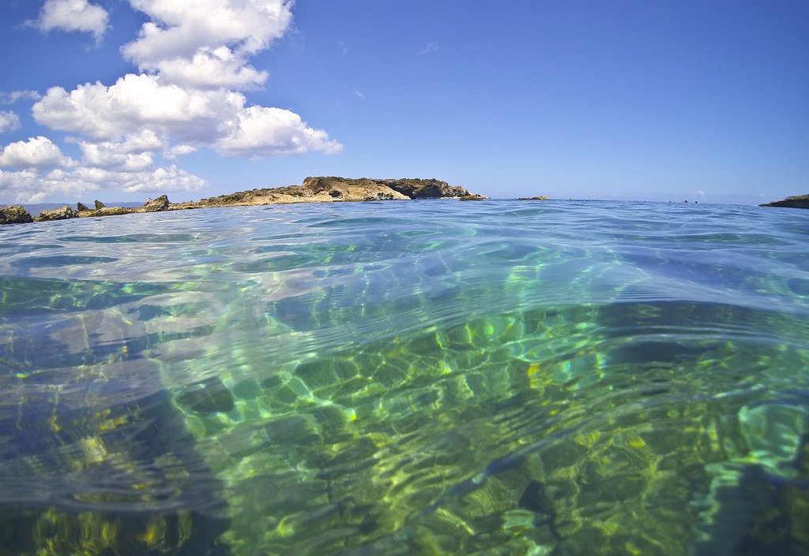

Tours!
Waikiki Tour
Waikiki (also known as Waikiki Beach) is a neighborhood of Honolulu on the south shore of the island of Oʻahu in the United States state of Hawaii. Waikiki is most famous for Waikiki Beach, which is one of six beaches in the district, along with Queen's Beach, Kuhio Beach, Gray's Beach, Fort DeRussy Beach and Kahanamoku Beach. There are also a number of fish that live in and around the area such as the humuhumunukunukuapua'a.

Sharks Cove Tour
Sharks Cove has been rated by Scuba Diving Magazine as one of the "Top Twelve Shore Dives in the World". Located on Oahu's world famous North Shore, this small rocky bay forms part of Pupukea Beach Park and boasts blue water and an impressive amount of sea life. The bottom is made up of large smooth boulders and coral heads forming small caves and ledges for marine life to hide. The walls of the surrounding cliffs provide calmer water attracting schooling surface fish.
Waianae Tour
At the Wai'anae Small Boat Harbor, tour operators launch their boats to take people out to snorkel with wild dolphins or to cruise along the coastline. It is a small working harbor where you can also see fishing boats and small yachts. The best swimming beach in Wai'anae is Poka'i Bay. Some animals that live around the island are Sea Turtles all the way to Humpback Whales.

Hawaii Kai Tour
The Hawaii Kai Tour includes a number of differnt spots where you can spot anything from dolphins to seals